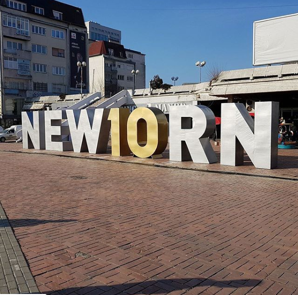

myPrishtina
A WORK OF ART
Come and visit
National Library of Kosovo
Cathedral of Saint Mother Teresa in Prishtina
Arches in Prishtina are hard to find. Yet, we found one.
Heroinat
Traveling by train
is not very popular in Kosovo, especially when compared to buses or cars. Yet, Prishtina's railway station was opened back in 1936 and is still functional today,with one train line going to and from Peja twice a day. Truthfully speaking,the ride is not the most comfortable and lasts longer than by bus, but if you have time and would like to see sceneries you otherwise wouldn't, we truly recommend trying it out.
Flowers for sale in the main square hint that the ‘hibernation’ season is ending.
The Old Baazar
Yellow Buses
We love seeing these yellow buses roaming around Prishtina. Not only are they pretty to see, but they also improve mobility in the city and help decrease congestion. So let's hop on our yellow buses, or any other color-buses, and explore our city. A ride with public transport in Prishtina costs 40 cents; if you take your grandma or grandpa with you, they can go for free. Plus, they probably like spending time with you. Now you can find Prishtina's public transport buses on Google Maps and plan your journey properly. So, regardless if you're going to work, or hanging out with friends, leave your car keys at home and enjoy the *yellow* ride! Also, you can now finally travel to the airport and back using public transportation!
Kino ARMATA
After being shut down for 30 years, Kino Armata opened its doors again to the public about a year ago. Although the name suggests it is a cinema, the place doubles as both a movie theatre and a public space that supports public gatherings and local artists that wish to showcase their talent. The interior makes you feel as if time stood still in this place from when it closed 30 years ago. The wooden furniture, tiled floors stark white walls, with a few old relics displayed on wooden shelves, gives this place a unique and nostalgic feel. As you are reading this, Kino Armata is filled with people dancing to a music genre not so commonly heard in Prishtina, since tonight's the first night of Prishtina Jazz Week 2019! In addition to performances from renowned international musicians from various countries during the next four days, there will also be discussions, film screenings about jazz music, and workshops.
Views from above! This basketball court in Qafa neighborhood has raised the bar for all the other courts in Prishtina!
National Museum of Kosovo
"Race the rain, ride the wind, & chase the sunset"

Pallati i Rinise
Goddess on the Throne
The figurine represents a female deity,
reflecting the cult of the great mother idol.
It is preserved in the Museum of Kosovo.
The Kosovo Museum has adopted the image of the 'Goddess on the Throne'
as the institution’s distinctive logo.
One of the most precious archaeological artifacts of Kosovo,
it has been adopted as the symbol of Pristina.
“The sun always shines above the clouds.”
Parku i Gërmisë
"Two roads diverged in a wood, and I took the one less traveled by. And that has made all the difference." Robert Frost wrote much of his poetry inspired by the exquisite colors of fall in Vermont. We're pretty sure that this zig-zag road in Gërmia would've also done the trick though.
The Great Mosque “Sulltan Mehmet Fatih”
Stadium "Fadil Vokrri"
Newborn Monument through the years
We're counting down to the 10th anniversary of Kosovo's independence. Back in 2008, "NEWBORN" monument was installed in front of "Pallati i Rinise" to mark the birth of the youngest country in Europe. Uncertain about the future, yet bustling with hope... people rallied to sign it. NEWBORN has since been considered a national symbol and has even been awarded the Cannes Gold Lion. It's redesigned annually on February 17 to remind us that we need to do the same.
Fun Fact: Kosovars are fond of the international community. The "NEWBORN" design from 2013 in the pic best exemplifies it. Truth is we can't easily travel abroad, but we warmly welcome everyone in.
Fun Fact: To mark 15 years since the end of war, each letter had a specific camouflage design representing each army of the 7 main countries that supported Kosovo on its road to freedom! Sadly, war has been an indispensable part of Kosovo's history. A part that every so often reminds us to cherish what we have now and encourages us to work harder. NEWBORN from 2014 honors the brave heroes who stood up for Kosovo during its struggle to gain independence.
NEWBORN of 2015 was about freedom of speech
All citizens were invited to paint whatever they wanted in all letters, except for the letter E. That letter was left black to symbolise the struggles Kosovo had then with Economy, Europe, Exodus and all the other E-s of that time. Nevertheless the cheerful paintings on the other letters speak plenty about Kosovars and our nature.

Free as a bird, or caged as a bird? Well 2016's NEWBORN design answers specifically that! With visa liberalization out of sight and further limitations ahead, the very sought-after freedom has little significance when you're surrounded by barbed wire.
Walls have been such a trend during the past year, you have most likely heard a story about them, or two. Nevertheless, we're sure you've never heard of a no-wall story before. We're here to share one. 2017's NeWborn was the coolest yet. It sent a clear message to the world that we want No Walls, neither inside or surrounding our country, thereby we knocked them over. We are counting down one more day to #Kosova10 and one day closer to figuring out this year's NEWBORN design.

Kosovo celebrates its 10th anniversary
Happiness is waking up on Independence Day and seeing that this year's Newborn design steers away from political motifs that have so far characterized it. In this year’s design,local artists use doodles to call for protecting what’s ours!
- N - ature
- E - nergy
- W - ater
- B - io
- O - xygen
- R - ecycle
- N - ature
Newborn got a makeover.It got:and hundreds of other adjectives that describe the 99 kosovar women from different ethnicities, who have taken over the monument with their portraits and the world with their actions!
- N-oble
- E-mpathic
- W-itty
- B-rave
- O-utstanding
- R-esilient
- N-ewsworthy
You know its going to be a good day when before the sun sets,the sky itself turns into a blooming lavender field.